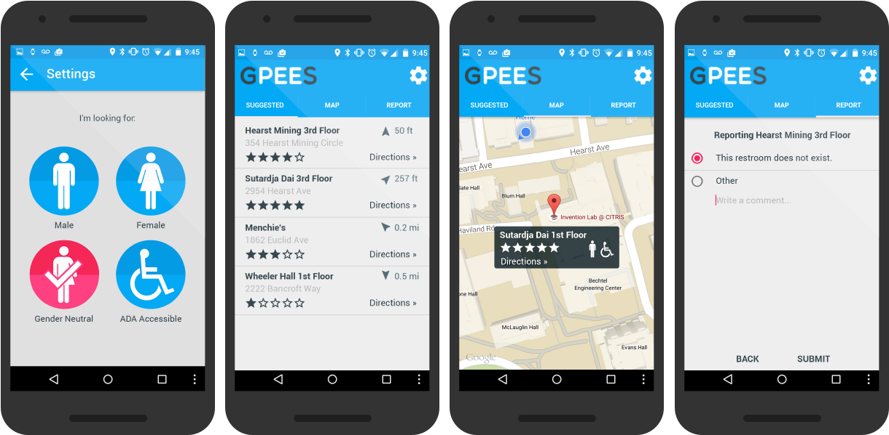
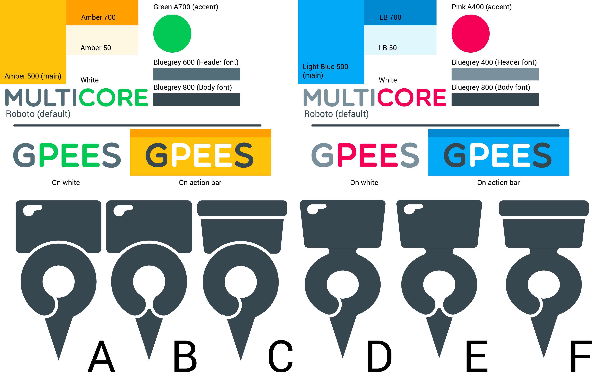

Jingyi
Li

G-Pee-S is an mobile & smartwatch application that allows gender non-conforming folks and people in wheelchairs to locate safe public restrooms.
This application was originally developed for CS160 during summer 2015, when the theme was travel. Traveling in foreign countries can be hassling enough (Do I have to pay? How about ask for a key?), but our target users have a disproportionate amount of trouble locating safe public restrooms to begin with. G-Pee-S utilizes a crowd-sourced database of restrooms, and has three smartwatch modes for the least disruptive travel experience possible.
Meet two G-Pee-S users, Ace and Chona.
User Flow
The mobile app is constrained to 4 simple screens. On first launch, users are greeted with selecting their preferred restrooms. They can then view qualifying restrooms nearby as a list, or on a map. Clicking on a restroom will bring up its own page, where users can view and add reviews. Finally, users have the option of reporting mis-logged restrooms.
G-Pee-S was intended to be launched from the watch. Users have the choice of active, passive, or log mode. In active mode, the app presents restrooms ordered by distance, and starts a Google Maps navigation when one is selected. In passive mode, users specify a minimum radius for restrooms, and are notified when they come within a restroom of said radius. Upon arrival, users can choose to report a problem directly from the watch. Finally, in log mode, users go through a simple four-option interface to add newly discovered restrooms to the G-Pee-S database.
User Research
My team and I conducted a contextual inquiry with three users in our target group: a wheelchair user in college, a non-binary individual, and a new parent with a young child. Tasks common across all interviewees included often asking other people for restroom locations and using visual signifiers to identify if the restroom was within their criteria (i.e., lack of gender signage, wheelchair symbol). None of the interviewees actively sought out restrooms while traveling, and all of them had a few “preferred” restrooms in their routines they habitually used.
Uniquely, the wheelchair user mentioned the advantage of voice commands to control the watch, since many other people with disabilities do not have full motor control. We learned that many wheelchair uses have their phone on them at all times (as it straps to their chair), and there are many buildings with ADA accessible restrooms in theory, but not in practice (e.g., different gender restrooms are on different floors, or the pathway to get restroom is difficult to navigate). The non-binary person mentioned they often, at the temporary sacrifice of their gender identity, use binary restrooms to avoid awkward social interactions. The parent mentioned, as an owner of a baby, safety is one of his top concerns and he frequently needs to find restrooms during road trips.
Design Evolution
Taking cues from Google's Material Design color palette, G-Pee-S originally came in two flavors, but we settled on the blue/pink theme as the colors are those of the trans* flag. Our chosen logo (D) is a hybrid of a Maps pin and a toilet seat.
We first made low fidelity prototypes in Balsamic, and printed them out on sheets of paper (which we taped to a physical Nexus 5 and Moto 360) during our first stage of user testing. Our insights lead to two notable mobile interface changes: first, testers found three separate starred ratings unnecessary and tedious for an individual restroom, so we consolidated them into one general ranking. We also standardized our interactions with those of other mobile apps, such as changing the direction of review scrolling from horizontal to vertical. Secondly, we narrowed the scope of our application (eliminating options for baby changing stations and keys, instead directing them to the 'comment' box in a restroom profile) for a cleaner, visually-grounded Settings page.
While users generally were familiar navigating the mobile side of our application, the wearable side needed more work. Our original home screen had two small buttons, which we then tried to change to a scrollable menu. However, this signifier was unclear to our users—who thought they were still buttons—and decided on circular icons, changing the log symbol from pen and paper to a plus sign, to convey the convention of adding a restroom to the database.
Our range’s unit of “m” also spurred confusion in everyone: one user thought it meant “minutes”, while another thought “miles” (large numbers in the context of driving), while we intended it to mean “meters”. Hence we switched to a two-step set-up screen of units, then quantity. Finally, after a second high-fidelity user test, we changed our gender icons (which no one recognized) to the more common human ones.
Media
Check out our demo video below, or click here for our poster.
{kind=link}
Credits
Interface design: Jingyi Li
Front-end development: Qin Bian, Jingyi Li
Back-end development: Ashish Krishna, Ryan Wilson